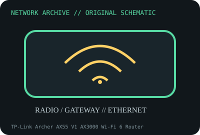

[ MODEL-SPECIFIC NETWORK HARDWARE ]
TP-Link Archer AX55 V1 AX3000 Wi-Fi 6 Router
Dual-band Wi-Fi 6 router with Gigabit WAN/LAN and USB 3.0. Confirm exact product label and revision before applying specifications.

IDENTIFICATION: Confirm manufacturer PID, hardware revision, device ID or module suffix. Nominal standards/link rates are not measurements of payload performance.
Exact specifications and compatibility
| Dedicated subcategory | Network appliances: routers, access points & switches |
|---|---|
| Exact product/model | TP-Link Archer AX55 V1 AX3000 Wi-Fi 6 Router |
| Bus, ports and physical interface | One Gigabit WAN, four Gigabit LAN, USB 3.0 and four external antennas; hardware version V1. |
| PHY, radio or protocol | 802.11ax dual-band 2x2 class; manufacturer rates up to 2402Mb/s on 5GHz and 574Mb/s on 2.4GHz with supported width/client. |
| Nominal rate (not measured) | AX3000 is summed radio PHY class, not measured Internet or single-link speed; Gigabit WAN/LAN are port nominal rates. |
| Measured throughput | No measured benchmark is claimed for a physical specimen. A valid result must record host/peer, link partner, media/cable, driver/firmware, traffic pattern, test tool and duration. |
| Drivers, OS and firmware | TP-Link stock router firmware, web UI and Tether app; exact regional firmware and hardware version specific. |
| Compatibility | Requires version- and region-matched power/firmware, Gigabit peers and client support for Wi-Fi 6 160MHz modes where offered. |
| Variant warning | Archer AX55 V1 is distinct from AX55 V2/V1.6 and AX55 Pro. Check label before firmware and do not assume identical internal hardware across markets. |
Model and revision notes
Archer AX55 V1 is distinct from AX55 V2/V1.6 and AX55 Pro. Check label before firmware and do not assume identical internal hardware across markets.
TP-Link stock router firmware, web UI and Tether app; exact regional firmware and hardware version specific.
Requires version- and region-matched power/firmware, Gigabit peers and client support for Wi-Fi 6 160MHz modes where offered.
Archival, ESD and preservation notes
Log full hardware version, region, PSU, serial/MACs, firmware and reset status. Preserve external antenna condition and avoid storing with power attached.
Document source URL, access date, document revision and specimen label/condition. Preserve without credentials or private configuration.
Primary manufacturer and standards sources
- TP-Link Archer AX55 product specificationsPrimary manufacturer or standards documentation; verify exact SKU and host revision.
- TP-Link Archer AX55 V1 support/downloadsPrimary manufacturer or standards documentation; verify exact SKU and host revision.
- IEEE 802.11 standards working groupPrimary manufacturer or standards documentation; verify exact SKU and host revision.
Manufacturer statements cover the named part or its documented product family; the exact labeled revision and vendor compatibility list take precedence.